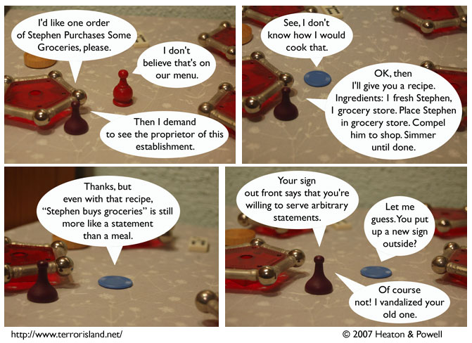

Strip #209
— Friday, October 12, 2007
It pays to be prepared (with vandalism)
Notes, Thoughts, &c.
Ben’s Notes
Today’s Dudley’s Dungeon really amused me. Read it if you like NetHack, math, and jokes that take a while to get.
Lewis’s Notes
Yes, NetHack is awesome. Did you know that there are woodchucks in NetHack, but they’re never created by the normal monster generation process? To get them, you have to either polymorph other monsters, reverse genocide them, or use wishes. There are three ways you can get woodchucks from a wish: wish for a woodchuck figurine and apply it, wish for a woodchuck corpse and cast turn undead at it, or wish for a woodchuck statue and cast stone to flesh at it.
I wrote Lewis’s comments today. -Ben